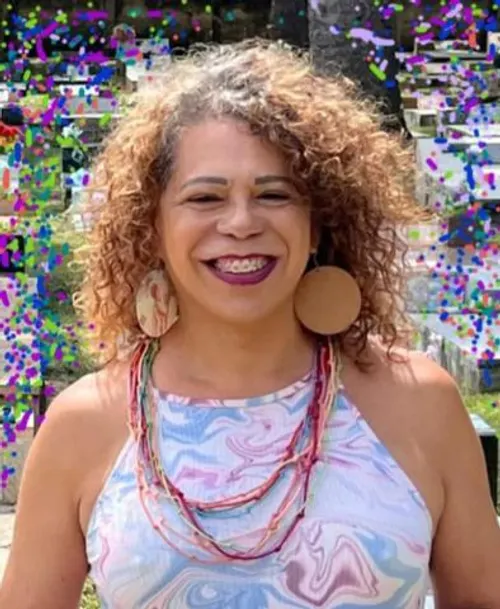

Alice Ball
Química norte-americana · 1892–1916Criou o “Método Ball”, o primeiro tratamento injetável eficaz e seguro contra a hanseníase. Primeira mulher e primeira pessoa negra a obter mestrado na Universidade do Havaí.
Ver história completaConheça quatro cientistas negras nacionais e internacionais que marcaram a história.
Conhecer Histórias
Criou o “Método Ball”, o primeiro tratamento injetável eficaz e seguro contra a hanseníase. Primeira mulher e primeira pessoa negra a obter mestrado na Universidade do Havaí.
Ver história completaPrimeira mulher negra doutora em Física no Brasil e primeira professora negra do Instituto Tecnológico de Aeronáutica (ITA).
Ver história completa
Intelectual de destaque nos estudos sobre o conceito de quilombo na história brasileira, racismo e o papel da mulher negra na sociedade.
Ver história completa
Primeira mulher travesti negra a conquistar o título de Doutora em Educação no Brasil e professora da UFPR.
Ver história completa